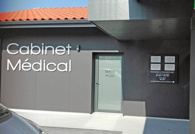

Cabinet médical du Dr BROUDIN

Bienvenue, je suis le Dr BROUDIN.
Sur cette page vous trouverez des renseignements sur mon cabinet médical.
Horaires d'ouverture
Le cabinet est ouvert tous les jours du Lundi au Samedi :
| Lundi |
10h00-12h00 |
14h00-19h00 |
| Mardi |
08h30-12h00 |
14h00-19h00 |
| Mercredi |
08h30-12h00 |
14h00-19h00 |
| Jeudi |
08h30-12h00 |
14h00-19h00 |
| Vendredi |
08h30-12h00 |
14h00-19h00 |
| Samedi |
08h00-13h00 |
- |
| Dimanche |
- |
- |
En cas d'urgence
- Pendant les heures d'ouverture, appelez le numéro du cabinet (01.85.61.37.28)
- Si vous ne pouvez pas me joindre, appelez le 15 (SAMU)
- En dehors des heures d'ouverture, le répondeur du cabinet vous donnera les coordonnées du médecin de garde
Me joindre par internet
Si vous désirez me joindre, vous pouvez utiliser le formulaire de contact suivant.
Je suis par ailleurs membre de démonstration des MMT
La liste de medicaments ici, pour la télécharger cliquez là .
Pour accéder à la fin de la liste appuyez la